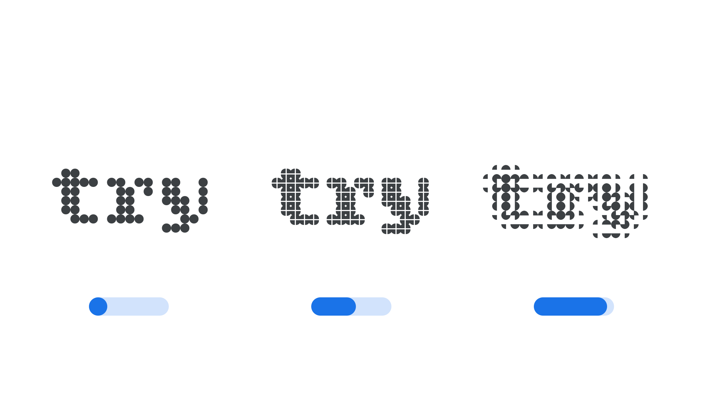

Element Expansion axis (ELXP)
By Google Fonts Knowledge contributors · Google Fonts Knowledge.
Original article · Source on GitHub · CC BY-SA 4.0. Text, illustrations and existing credits reproduced from the licensed Knowledge repository. Open Shelf adapted the layout and links; these adaptations are also CC BY-SA 4.0. No endorsement implied.
“Element Expansion” (ELXP in CSS) is an axis found in some modular variable fonts where letterforms are composed using multiple copies of the same element. In these fonts, the Element Expansion axis controls how far apart those elements sit from one another.
The Google Fonts CSS v2 API defines the axis as:
| Default: | Min: | Max: | Step: |
|---|---|---|---|
| 0 | 0 | 100 | 1 |

Typeface: Bitcount
As the Element Expansion axis moves from its default towards its maximum, the elements that make up each glyph move apart from one another, opening up gaps within the letterforms without changing how many elements are used to construct them.
As with the Element Grid and Element Shape axes, Element Expansion alters the structure of the letterforms in a way that may change the minimum font size at which the typeface is legible. These axes can be combined to produce a wide range of visual effects.
The axis tag starts with EL, which is an abbreviation of ‘Element’. This prefix is used for the group of axes (ELSH, ELGR, ELXP) that are related to modular typefaces — those with glyphs composed of elements.
This axis was first introduced in the Bitcount typeface.